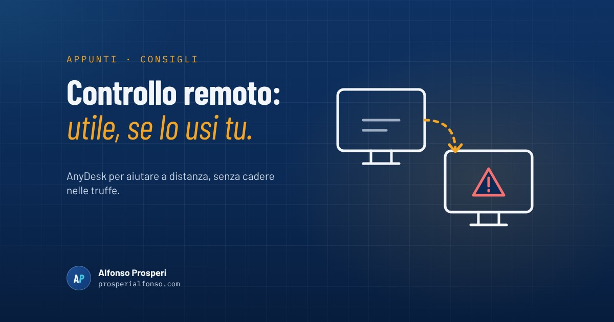

AnyDesk è un programma di controllo remoto: permette di vedere e usare un computer a distanza. È comodissimo per aiutare un genitore con il PC senza muoversi di casa, o per lavorare sul computer dell'ufficio. Ma è anche lo strumento preferito di una truffa molto diffusa. Vediamo entrambe le cose.
Come funziona
- Chi deve essere aiutato scarica AnyDesk dal sito ufficiale e lo apre: compare un codice numerico.
- Chi aiuta inserisce quel codice nel suo AnyDesk e chiede la connessione.
- Sul primo computer compare una richiesta: solo se la accetti, l'altra persona vede il tuo schermo e può muovere il mouse.
Funziona su Windows, Mac, Linux, Android e iPhone. Per uso personale è gratuito; per il lavoro ci sono licenze a pagamento. Esistono alternative simili, come TeamViewer o Assistenza rapida di Windows, che funzionano allo stesso modo.
La truffa del finto operatore
Ti chiama un finto operatore della banca, delle Poste o del "supporto tecnico": c'è un problema sul conto, un virus sul PC, un rimborso da sbloccare. Per "risolvere" ti chiede di installare AnyDesk o un'app simile e di leggergli il codice. Da quel momento vede tutto quello che fai, compresi i codici della banca, e può fare bonifici al posto tuo.
Le regole per non cascarci:
- Nessuna banca, Poste o forza dell'ordine ti chiede di installare un programma di controllo remoto. Mai.
- Non leggere il codice di AnyDesk a chi ti ha chiamato lui. Se hai un dubbio, riattacca e chiama tu il numero ufficiale che trovi sulla carta o sul sito.
- Non aprire l'app della banca mentre qualcuno è collegato al tuo dispositivo.
- Se ti accorgi di essere caduto nella truffa: chiudi AnyDesk, spegni la connessione, chiama subito la banca per bloccare tutto e denuncia l'accaduto.
Usarlo in sicurezza
- Scaricalo solo dal sito ufficiale o dagli store.
- Accetta connessioni solo da persone che conosci e che hai chiamato tu.
- Chiudi il programma quando hai finito, e se lo hai impostato per l'accesso automatico usa una password lunga e diversa dalle altre.
Per riconoscere le altre truffe del periodo, trovi i consigli nella guida alle protezioni anti-truffa di Android.